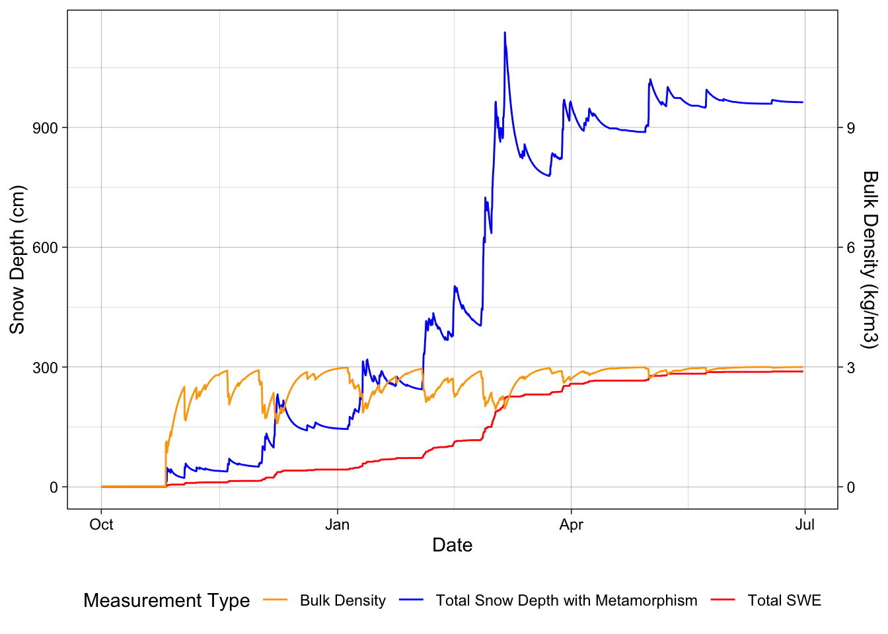

Billy Johnson Dr Fassnacht October 31, 2024 WR 574 Snow Hydrology
Assignment 8. Densification and Metamorphism
Methods
To begin analysis on snowpack metamorphism the approach that I decided to take was to build a function. I began with creating a data frame to store the results from my calculations. I then was able to say if air temperatures are below 0°C & snow is falling then compute the Hedstrom and Pomeroy 1998 equation (equation 1). I then created an if statement to say only get SWE when there is snow. Finally in that first function I calculated the snow depth with the relationship between SWE and density.
Within that stored dataset I created a loop to iterate through each observation in the results. With this I was able to create a lag column with the density and SWE that combined the previous time steps. I set the max density at 300 kg/m3 & set kd = 0.01 as a coefficient, using Verseghy’s 1991 first order decay function (equation 2). With the density of old snow and the old snow SWE from the previous time step I was able to calculate the old snow depth to move on to the final part. The final if function that I created to calculate the snowpack metamorphism I stated if temperatures are below 0°C to stop rain from being added I kept all observations of old snow. With old snow SWE and depth because we can add those together to sum up the whole year, I was able to calculate the combined density (figure 2). The final part was getting fresh snowfall from a previous assignment and combine that with the total snow depth with metamorphism (figure 1.)
To complete the analysis comparing the estimated bulk density from the SNOTEL data with a computed density from Sturm et al 2010 (equation 3). I used given values according to an alpine environment to fill in rho max and rho original. Using those given value, I was able to calculate the computed density from Sturm et al 2010. I finally combined the two time series plots (figure 3.)
Results
After computing the total snow depth with metamorphism, we can see that the peak of snow depth at Parker Peak in Yellowstone National Park was about 1,000 mm. This station is located at 9400 feet in elevation. The fresh snow throughout the year cumulated to give use a total of 4,000 mm in snowfall throughout the year (figure 1).
Figure 1. Line plot showing snow depth over the water year. Metamorphism acting on the blue line while red shows the fresh snow that falls throughout the year in Yellowstone National Park
Using the computed total depth with metamorphism I was able to calculate bulk density. The density max wax a set 300 kg/m3. Figure 2 shows the snowpack until it is melted in late June.
Figure 2. Total snow depth with metamorphism over the year at Yellowstone National Park with computed bulk density shown as well. To help with scaling bulk density it divided by 100
The final part of this analysis was to compare the computed density to the estimated bulk density. We see that the Sturm et al 2010 computed density is much higher at the end of the year than our estimated bulk density. The estimated bulk density has a limit on the max rho as well.
![Figure 3. Time series plot showing the bulk density over time compared with the calculated density using equation from Strum et al 2010] (Images/Metemorphism/figure3.jpg)
Discussion
Overall, when looking at the computed snow depth with metamorphism one thing that I would expect is the peak snow depth to be much higher (figure 1). This area in Yellowstone receives a good amount of snow. The position of this SNOTEL station may have a big impact on the amount of snow accumulated at the station compared with the rest of the park. Another thing that I find weird about my computed total snow depth is why it doesn’t melt off. My line stays at 1000 mm of snow until the end of June. The addition of snowfall is correlated with the increase in snow depth, so I know that this analysis has worked well. When there is no new snow being accumulated the snowpack goes down as well (figure 1).
When discussing the bulk density and total snow depth with metamorphism we can see a few instances we see direct correlation between a big increase in snowpack which would indicate that fresh snow is falling the density of snow goes way down. At the end of the year when we would expect not as much new snow to fall, and temperatures are bgining to rise we find that the density is very constant around 300 kg/m3 (figure 2.)
Finally, within the comparison between our estimated bulk density and the computed density with Sturm 2010 equation we see that the computed equation is a much higher estimation of density (figure 3). My estimated bulk density does start very high, but this can be expected with snowfall in the fall when temperatures are still relatively warm. In the peak season we find that there are many mor instances when the density drops but with snow on the ground the density only drops to about 180 kg/m3 which seems a bit high but when thinking about it this is reasonable as this is a bulk density with all layers of snow.
── Attaching core tidyverse packages ──────────────────────── tidyverse 2.0.0 ──
✔ dplyr 1.1.4 ✔ readr 2.1.4
✔ forcats 1.0.0 ✔ stringr 1.5.1
✔ ggplot2 3.5.2 ✔ tibble 3.2.1
✔ lubridate 1.9.3 ✔ tidyr 1.3.1
✔ purrr 1.0.4
── Conflicts ────────────────────────────────────────── tidyverse_conflicts() ──
✖ dplyr::filter() masks stats::filter()
✖ dplyr::lag() masks stats::lag()
ℹ Use the conflicted package (<http://conflicted.r-lib.org/>) to force all conflicts to become errors
Linking to GEOS 3.10.2, GDAL 3.4.2, PROJ 8.2.1; sf_use_s2() is TRUE
terra 1.7.65
Attaching package: 'terra'
The following object is masked from 'package:tidyr':
extract
To enable caching of data, set `options(tigris_use_cache = TRUE)`
in your R script or .Rprofile.
Attaching package: 'tigris'
The following object is masked from 'package:terra':
blocks
elevatr v0.99.0 NOTE: Version 0.99.0 of 'elevatr' uses 'sf' and 'terra'. Use
of the 'sp', 'raster', and underlying 'rgdal' packages by 'elevatr' is being
deprecated; however, get_elev_raster continues to return a RasterLayer. This
will be dropped in future versions, so please plan accordingly.
Load in the data
# Soda Butte Cr at Park Boundary at Silver Gate (06187915)sitenumber <-"06187915"parametercd <-c("00060", "00010")startdate <-"2023-09-01"enddate <-"2024-08-31"rawUSGSdata <-readNWISdv(sitenumber, parametercd, startdate, enddate)
# ASOS RAMOS YellowstoneASOS_yellowstone_original <-read_csv("DataIn/P60.csv")
Warning: One or more parsing issues, call `problems()` on your data frame for details,
e.g.:
dat <- vroom(...)
problems(dat)
Rows: 7370 Columns: 33
── Column specification ────────────────────────────────────────────────────────
Delimiter: ","
chr (24): station, drct, sknt, mslp, vsby, gust, skyc1, skyc2, skyc3, skyc4...
dbl (8): lon, lat, elevation, tmpf, dwpf, relh, p01i, alti
dttm (1): valid
ℹ Use `spec()` to retrieve the full column specification for this data.
ℹ Specify the column types or set `show_col_types = FALSE` to quiet this message.
ASOS_clean <-read_csv("DataOut/ASOS_clean.csv")
Rows: 246 Columns: 9
── Column specification ────────────────────────────────────────────────────────
Delimiter: ","
dbl (8): tmpf, p01i, relh, sknt, tmp_c, Td, P_mm, cumm_prec
dttm (1): valid
ℹ Use `spec()` to retrieve the full column specification for this data.
ℹ Specify the column types or set `show_col_types = FALSE` to quiet this message.
Rows: 246 Columns: 13
── Column specification ────────────────────────────────────────────────────────
Delimiter: ","
chr (1): month
dbl (11): tmpf, p01i, relh, sknt, tmp_c, Td, P_mm, cumm_prec, HP_fresh_snow...
dttm (1): valid
ℹ Use `spec()` to retrieve the full column specification for this data.
ℹ Specify the column types or set `show_col_types = FALSE` to quiet this message.
Rows: 341 Columns: 10
── Column specification ────────────────────────────────────────────────────────
Delimiter: ","
chr (1): Date
dbl (8): Site Id, WTEQ.I-1 (in), PREC.I-1 (in), TOBS.I-1 (degC), TMAX.D-1 (d...
lgl (1): Time
ℹ Use `spec()` to retrieve the full column specification for this data.
ℹ Specify the column types or set `show_col_types = FALSE` to quiet this message.
Rows: 341 Columns: 13
── Column specification ────────────────────────────────────────────────────────
Delimiter: ","
dbl (11): Site Id, WTEQ.I-1 (in), PREC.I-1 (in), TOBS.I-1 (degC), TMAX.D-1 ...
lgl (1): Time
date (1): Date
ℹ Use `spec()` to retrieve the full column specification for this data.
ℹ Specify the column types or set `show_col_types = FALSE` to quiet this message.
Questions
1. Snowpack Metamorphism (using ASOS hourly data):
Assume a bulk snowpack, i.e., only new (fresh) and old snow. -Use the first order exponential function to model the densification of a snowpack. -Chose an appropriate maximum snowpack density by considering the maximum density at peak SWE from the SNOTEL station or the Pomeroy and Gray [1995] formulation. Note that the rate of densification can also be altered. -Allow the new snow to fall at its fresh snow density and determine the net snowpack depth as a function of the old snow and new snow. -On one plot show the snow depth with metamorphism that you computed in the question and the hourly fresh snow depth or snowfall from the previous assignment. (This is analogous to SNOTEL question in the previous assignment). The units for depth are meters. -On a second plot show the hourly bulk snow pack density (in kg/m3).
Clean up a couple data sheets to use for the rest of the year
calculate_snow_properties <-function(data) {# Initialize the calculation with first row values result <- data %>%# First calculate fresh snow density and initial valuesmutate(# Fresh snow density and SWE calculationsfresh_snow_density =case_when( tmp_c <0& P_mm >0~67.92+51.25*exp(tmp_c /2.59),TRUE~0# No fresh snow density for rain or no precip ),# Fresh snow SWE is only from snow, not rainfresh_snow_swe =case_when( tmp_c <0& P_mm >0~ P_mm, # Only count SWE when it's snowTRUE~0 ),# Fresh snow depthfresh_snow_depth =case_when( fresh_snow_density >0~ (fresh_snow_swe / fresh_snow_density) *1000,TRUE~0 ) )# Initialize columns for the iterative calculation result$old_snow_density <-0 result$old_snow_swe <-0 result$old_snow_depth <-0 result$total_snow_depth <-0 result$total_swe <-0 result$combined_density <-0# Iterate through the rows to calculate time-dependent valuesfor(i in2:nrow(result)) {# Previous time step values prev_combined_density <- result$combined_density[i-1] prev_total_swe <- result$total_swe[i-1]# Calculate old snow density using the equation max_density <-300# kg/m3 k <-0.01 result$old_snow_density[i] <-if(prev_combined_density >0) { (prev_combined_density - max_density) *exp(-k) + max_density } else {0 }# Old snow SWE is the previous total SWE result$old_snow_swe[i] <- prev_total_swe# Calculate old snow depth result$old_snow_depth[i] <-if(result$old_snow_density[i] >0) { (result$old_snow_swe[i] / result$old_snow_density[i]) *1000 } else {0 }# Calculate total depth and SWE only when temperature is below freezing# This prevents rain from being added to the snowpackif(result$tmp_c[i] >=0) {# If temperature is above freezing, only keep old snow (with metamorphism) result$total_snow_depth[i] <- result$old_snow_depth[i] result$total_swe[i] <- result$old_snow_swe[i] } else {# If temperature is below freezing, add fresh snow to old snow result$total_snow_depth[i] <- result$fresh_snow_depth[i] + result$old_snow_depth[i] result$total_swe[i] <- result$fresh_snow_swe[i] + result$old_snow_swe[i] }# Calculate combined density for next time step result$combined_density[i] <-if(result$total_snow_depth[i] >0) { (result$total_swe[i] / result$total_snow_depth[i]) *1000 } else {0 } }return(result)}# Apply the calculation to your ASOS dataASOS_snow_calcs <-calculate_snow_properties(ASOS_winter_month)
Fresh SNow vs Total snow with Metamorphism
ggplot() +geom_line(data = ASOS_snow_calcs, aes(x = valid, y = total_snow_depth, color ="Total Snow with Metamorphism")) +geom_line(data = ASOS_accumulation_new, aes(x = valid, y =cumsum(snowfall), color ="Fresh Snow")) +scale_y_continuous(name ="Total Snow Depth",sec.axis =sec_axis(~., name ="Fresh Snow") ) +scale_color_manual(values =c("Total Snow with Metamorphism"="blue", "Fresh Snow"="red")) +labs(x ="Date",color ="Types of Snow" ) +theme_linedraw()+theme(legend.position =c(0.25,0.80),legend.background =element_rect(fill ="white", color ="black"))
Warning: A numeric `legend.position` argument in `theme()` was deprecated in ggplot2
3.5.0.
ℹ Please use the `legend.position.inside` argument of `theme()` instead.
ggplot() +geom_line(data = ASOS_snow_calcs, aes(x = valid, y = total_snow_depth, color ="Total Snow Depth with Metamorphism")) +geom_line(data = ASOS_snow_calcs, aes(x = valid, y = total_swe, color ="Total SWE")) +geom_line(data = ASOS_snow_calcs,aes(x = valid, y = combined_density, color ="Bulk Density")) +scale_y_continuous(name ="Snow Depth (cm)",sec.axis =sec_axis(~./100, name ="Bulk Density (kg/m3)") ) +scale_color_manual(values =c("Total Snow Depth with Metamorphism"="blue", "Total SWE"="red", "Bulk Density"="orange") ) +labs(x ="Date",color ="Measurement Type" ) +theme_linedraw() +theme(legend.position ="bottom")

2. SNOTEL Metamorphism Modeling: Compare the estimated bulk snowpack density from your SNOTEL data (previous assignment) to a computed density using a formulation from Mizukami and Perica (2008), Sturm et al. (2010), or Sexstone and Fassnacht (2014).
psmax <-597.5ps0 <-223.7k1 <-0.0012k2 <-0.0038ASOS_snow_calcs <- ASOS_snow_calcs %>%mutate(day_of_year =yday(valid)) %>%mutate(day_of_year =ifelse(day_of_year >273, day_of_year -365, day_of_year))# StrumASOS_snow_calcs <- ASOS_snow_calcs %>%mutate(strum_density = (psmax - ps0)*(1-exp(-k1 * total_snow_depth - k2 * day_of_year)) + ps0)ggplot()+geom_line(data = ASOS_snow_calcs, aes(x = valid, y = combined_density, color ="Bulk Density"))+geom_line(data = ASOS_snow_calcs, aes(x = valid, y = strum_density, color ="Calculated Density (Strum et al 2010"))+labs(color ="Snow Density Type",y ="Density (kg/m3)",x ="Date" )+theme_linedraw()+theme(legend.position =c(0.75,0.20),legend.background =element_rect(fill ="white", color ="black"))